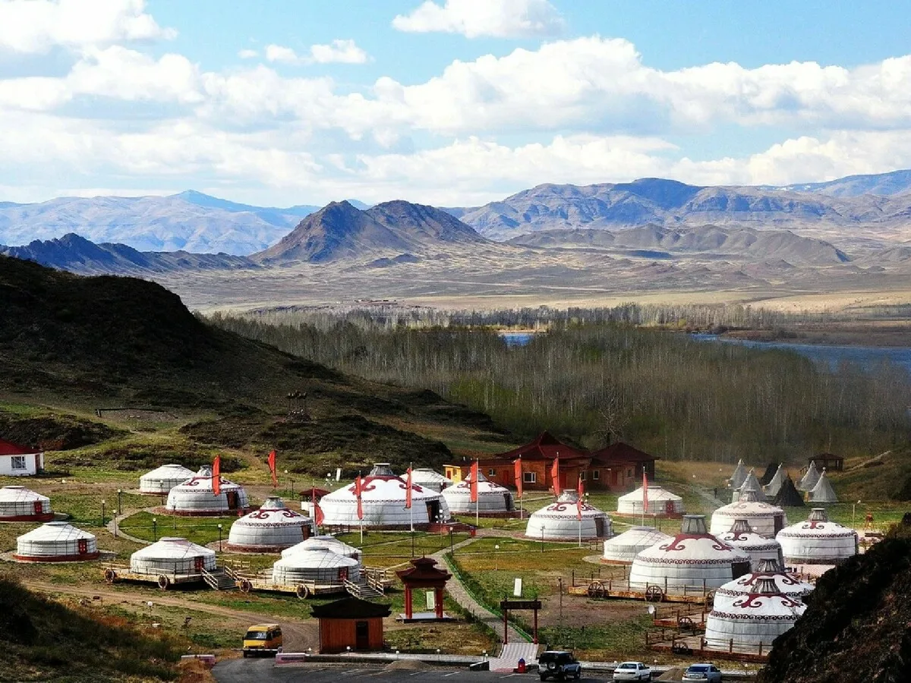
Республика Тыва - удивительный регион в самом центре Азии, где сохранились уникальные природные ландшафты и древние традиции кочевых народов.
Природа Тувы
Тыва славится своими горными хребтами, чистейшими озерами и бескрайними степями. Здесь находятся истоки великой сибирской реки Енисей, а также уникальные природные заповедники.
Культура и традиции
Тувинцы сохранили свои древние традиции, включая уникальное горловое пение (хоомей), кочевой образ жизни и буддийские духовные практики. В республике действуют несколько буддийских монастырей (хурээ), где можно познакомиться с местными религиозными традициями.
Чем знаменита Тува
Горловое пение (хоомей) - уникальное музыкальное искусство
Долина царей - древние скифские курганы
Озеро Тоджа - одно из самых красивых озер Сибири
Ушбельский перевал - живописный горный перевал
Национальная кухня - мясные блюда и молочные продукты
Информация о турах
- Государственный природный заповедник Азас
«Азас» — государственный природный заповедник в Тоджинском кожууне Республики Тыва. Основан 11 января 1985 года на базе республиканского заказника «Азас». Территория заповедника расположена в центральной части Тоджинской котловины на северо-востоке Тувы и вытянута в широтном направлении вдоль реки Азас. Площадь — 300 390 га. Вокруг заповедника создана двухкилометровая охранная зона общей площадью 90 тыс. км². Цель создания — сохранение и изучение в естественном состоянии экосистем Тоджинской котловины и окружающих её гор, охрана генофонда растительного и животного мира Южной Сибири.
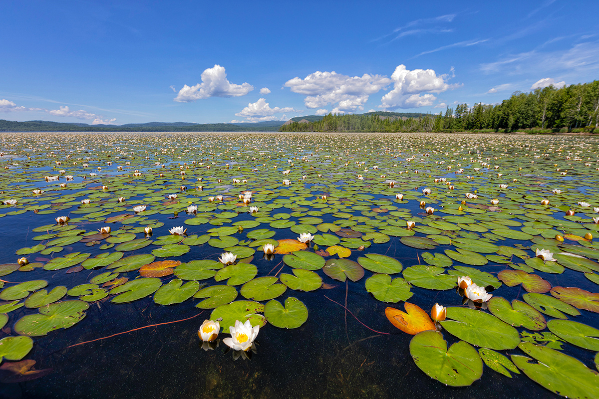
- Тур в озеро Тере-Холь
Тере-Холь — озеро на юго-востоке Республики Тыва, в Тере-Хольском кожууне. Находится в Тере-Хольской тектонической котловине на высоте 1300 метров.Некоторые особенности озера Тере-Холь:
Площадь поверхности — 39,1 км².
Мелководное озеро с десятком островов.
Из озера вытекает река Салдам, левый приток Балыктыг-Хема.
В Тере-Холь впадают небольшие реки Хольджух-Тих (с СЗ), Бажерганак (с З), Кунгур-Тук (с ЮВ).
Озеро входит в состав памятника природы «Озеро Тере-Холь».
На острове посреди озера сохранились остатки уйгурской крепости Пор-Бажын VIII века н. э.. Крепость представляет собой правильный прямоугольник, сохранившиеся стены достигают высоты 8 метров.
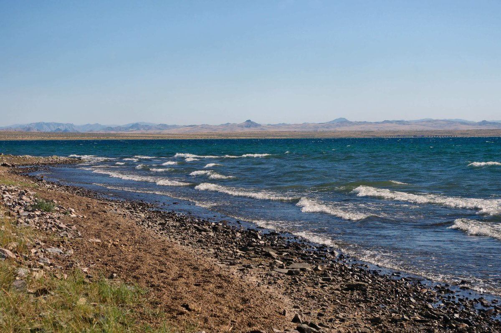
- Дургенский водопад
Дургенский водопад находится в Тандинском районе Республики Тыва, у северного склона хребта Танну-Оола. Водопад образуют мощные потоки стремительной горной реки Дурген. Он расположен в месте сужения каньона, ширина которого в этом месте достигает 3 метров, а высота — до 4 метров. Шум водопада слышен на расстоянии более 1 км.
Природа этого места восхищает видами острых скал, утопающих в верхушках деревьев, звуками и запахами тайги. Это одно из красивейших достопримечательностей хребта Танну-Ола. По легенде, водопад посещал сам Чингисхан. Во время перехода реки у его жены начались роды. Люди кричали: «Быстрее», что на монгольском звучит как «Дурген». Так и закрепилось название за водоёмом. Место находится в Тандинском районе.
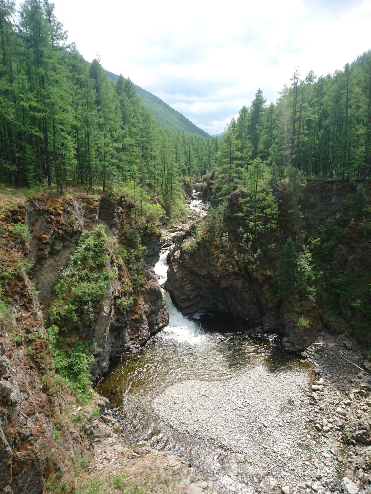
- Экспедиция к Долине Царей
Долина царей (Тувинская «Царская долина») находится в Пий-Хемском районе Республики Тыва, в устье реки Уюк. Это место известно как скопление древних массовых захоронений, относящихся к культуре скифов. Здесь расположены несколько цепочек курганов, которые, вероятно, отражают кровное родство погребённых людей. Археологическое изучение Тувы началось именно с этой долины. Первые научные раскопки провёл А. В. Адрианов в 1915–1916 годах.
Некоторые артефакты, обнаруженные в Долине царей:
Бронзовые зеркала с характерными выступающими ручками, которые могли использоваться в ритуалах, связанных с погребальными культами.
Кинжалы в зверином стиле, например, с навершием в форме свернувшегося хищника.
Золотые украшения с крестообразными, ромбовидными и круглыми накладками с геометрическим орнаментом, а также ожерелье из 12 золотых больших бусин барабановидной формы.
Амуниция для упряжки лошадей, найденная на месте конских жертвоприношений.
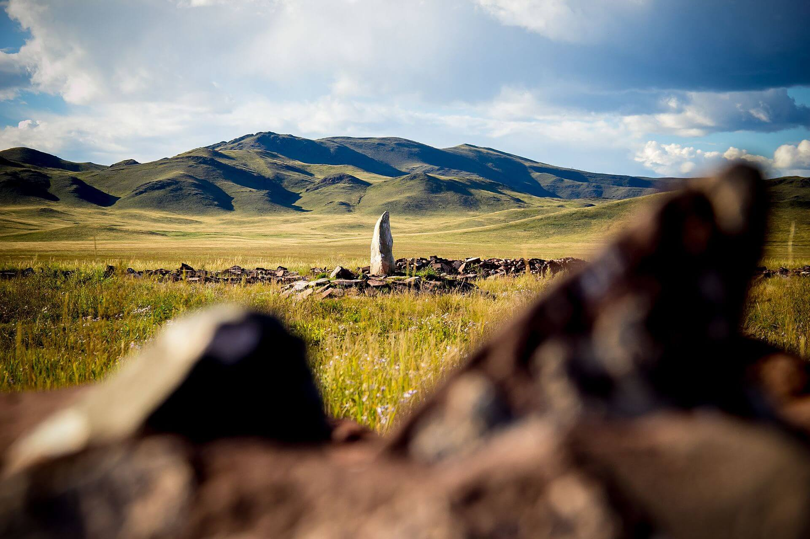
- Тур в озеро Сут-Холь
Озеро расположено на высоте 1814 метрах над уровнем моря. Имеет неправильную форму, вытянуто на северо-восток. Длина озера составляет 7-8 километров, ширина — 2-3 километра, площадь — 13,30 км², максимальная глубина составляет 35 метров, по другим данным — 148 метров. Питание снеговое, дождевое и ледниковое. Дно озера относительно пологое. Ложе водоёма представлено щебнистым материалом, который в глубоководной части озера перекрыт значительным словем ила. Донные отложения мелководной части озера состоят из щебнистого материала с примесью песка, в отдельных местах также ила. В озере обитает большое количество планктона — бокоплавов, которые являются пищей для некоторых рыб. Проводилось зарыбление водоёма мальками байкальского омуля, монгольского хариуса, пеляди, рипуса, ряпушки.
- Целебные источники
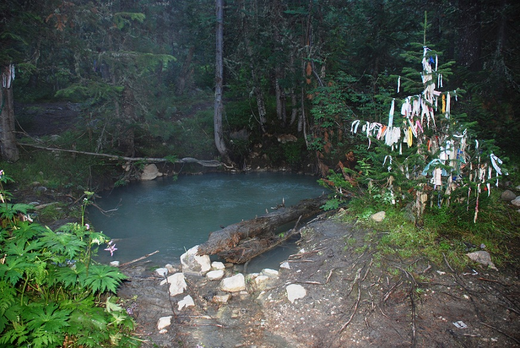
В Республике Тыва есть целебные источники (аржааны), которые делятся на минеральные и пресные. Минеральные источники:
Уш-Белдир. Находится на востоке республики, почти на границе с Монголией, у слияния трёх горных рек. Это азотные термальные воды, содержащие растворённый сероводород. Шивилиг. Расположен на западе Тувы, в Бай-Тайгинском кожууне у подножия горы Монгулек. Это холодные радоновые источники. Ажыг-Суг («Кислая вода»). Находится в центральной части Тувы, в Чаа-Хольском районе, на левом берегу Енисея. Это кислый источник, который рекомендуют при хронических гастритах, колитах, панкреатитах и других заболеваниях. Пресные источники: Ала-Тайга. Расположен в Монгун-Тайгинском районе, примерно в 25 км к северо-западу от посёлка Кызыл-Хая. Температура воды — 6,5 °С, макрохимический состав — гидрокарбонатный магниево-кальциевый, общая минерализация — 0,14 г/л. Кара-Суг («Чёрная вода»). Расположен в Чаа-Хольском районе. Это холодный источник, температура воды — 5 °С. На аржаане излечиваются от заболеваний опорно-двигательного аппарата, остеохондрозов, щитовидной железы, воспалительных процессов органов дыхания.
- Озеро Дус-Холь
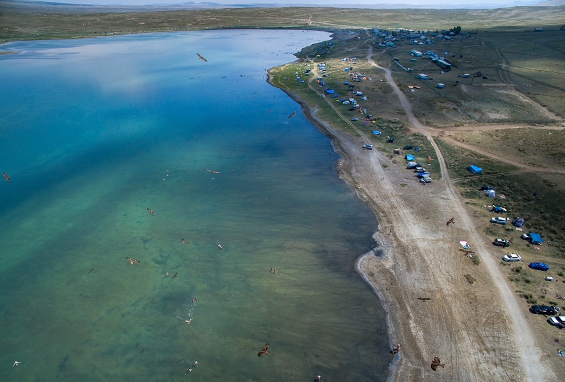
Озеро Дус-Холь (Сватиково) находится в Тандинском кожууне Республики Тыва, в 45 км южнее города Кызыл. В переводе с тувинского название означает «солёное озеро». Некоторые характеристики озера: Форма овальная: длина — 1,4 км, ширина — 0,3–0,5 км. Площадь — 0,55 км². Средняя глубина — 2 м, максимальная — 3,4 м. Берега относительно пологие, местами песчаные, лишены древесной растительности. На южном и восточном берегах расположены два источника с солёной водой, которые восполняют озёрную рапу.
Озеро Дус-Холь известно лечебными свойствами воды и грязей.
Состав рапы — хлоридный магниево-натриевый с высоким содержанием брома. Минерализация воды у берега — около 100 г/л, у дна — до 280 г/л. В рапе содержатся полезные микроэлементы: калий, бор, литий, цезий, йод и фтор.
Температура рапы меняется от берега ко дну — от 23°С до 41°С (гелиотермия).
Важно! Перед посещением озера при наличии заболеваний рекомендуется проконсультироваться с врачом. Грязевые ванны не рекомендуются людям с повышенным давлением, инфекциями или проблемами с сердцем и сосудами.
- Гора Монгун-Тайга
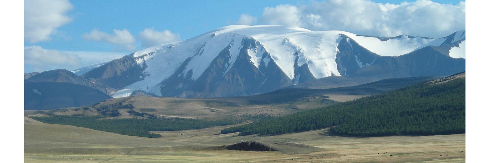
Монгун-Тайга — горный массив в юго-западной части Тувы. Это самая высокая точка Восточной Сибири, её высота достигает 3976 метров. В переводе с тувинского название означает «серебряная гора». Верхняя часть Монгун-Тайги круглый год покрыта огромным сверкающим на солнце ледником.
Массив находится на границе с Монголией, поэтому для его посещения потребуется оформить пограничный пропуск. Входит в состав заповедника «Убсунурская котловина».
Ближайший населённый пункт к горе — село Мугур-Аксы. От него до реки Кара-Суг можно доехать на внедорожнике по грунтовке, а затем — преодолеть пять километров вдоль русла. После на пути встают крутые склоны, глыбы льда и камня — дальнейшее передвижение возможно только пешком и с помощью снаряжения. Самым подходящим временем для восхождения на Монгун-Тайгу считается лето (июль-август).
- Кижи-кожээ
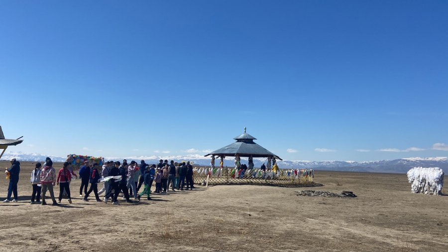
Кижи-кожээ — так тувинцы называют каменные изваяния воинов с ритуальными сосудами в руках. В республике известно около 200 подобных памятников.
Изваяния создавались в эпоху средневековья, когда на территории Тувы жили древние тюрки, уйгуры и кыргызы. Статуи устанавливали в честь знатных воинов и отличившихся героев. Одно из самых известных изваяний — «Чингисхан» — расположено в Барун-Хемчикском кожууне около села Бижиктиг-Хая. В народе его также называют сымыраныыр кожээ («изваяние, которому шепчут»). Считается, что если прошептать статуе в левое повреждённое ухо желание, оно обязательно сбудется. Особенности: изваяние выполнено из красноватого гранита, изображает воина с широкоскулым лицом. В руках он держит сосуд.
- Монастырь Устуу-Хурээ
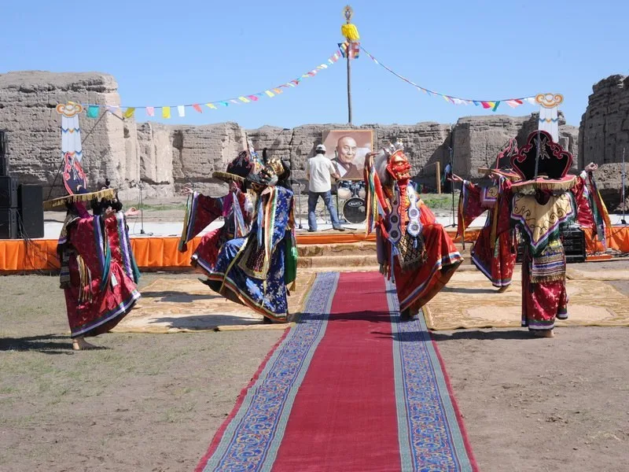
Устуу-Хурээ (тув. Үстүү-Хүрээ — «верхний хурээ», монастырь) — один из самых крупных и известных буддийских монастырей Тувы. Расположен в урочище Чайлаг-Алаак на правом берегу реки Чадан (правый приток Хемчика), в 7 км к юго-востоку от города Чадана.
ИсторияМонастырь основан в 1905–1907 годах нойоном Хайдыпом. Строительство осуществлялось под руководством и по проекту специально приглашённого тибетского ламы Кунтана Римпоче, а также при участии китайских мастеров. В 1930 году монастырь был закрыт, а в 1937 году главный храм — Цогчен — разрушен. Однако полностью разрушить комплекс не удалось, от храма остались высокие глинобитные стены. В 1999 году правительство России, признавая историческую и архитектурную ценность Устуу-Хурээ, приняло решение о его восстановлении. В 2012 году монастырь был официально открыт. Стиль монастыря сочетает элементы Тибета и Китая: скошенный низ типичен для тибетских построек, а лёгкий деревянный павильон второго яруса — для китайских.
- Гора Уттуг-Хая
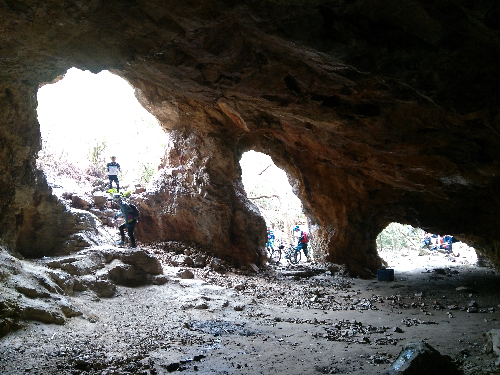
Гора Уттуг-Хая, расположенная здесь же, является священным местом, привлекающим паломников и туристов со всего мира. Её уникальная форма и загадочные легенды делают её одним из самых мистических мест в России. Гора имеет необычный вид: в ней есть большая выемка, ниже которой располагается темное пятно. Если внимательно присмотреться к нему, можно увидеть, как в темноте появляется свет. Говорят, что в этом месте нужно загадать желание. Если пройти сквозь гору, то оно обязательно сбудется. Существует много легенд и сказаний о горе Уттуг-Хая. Одна из них гласит, что в древние времена в этом месте жили великие шаманы, обладавшие невероятной силой. Они могли управлять стихиями, исцелять людей и предсказывать будущее. Когда шаманы умерли, их духи остались в горе, и теперь они помогают тем, кто приходит к ним с искренней верой. Другая легенда рассказывает о том, что в горе Уттуг-Хая находится вход в подземный мир, где обитают духи умерших, и что здесь нужно быть очень осторожным, так как духи умерших могут забрать душу человека с собой. Гора Уттуг-Хая является не только местом паломничества, но и популярным туристическим объектом. Каждый год сюда приезжают тысячи туристов, чтобы увидеть уникальную гору и загадать желание.
- Тур по столице Республики Тыва город Кызыл
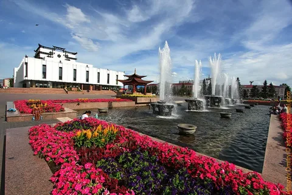
Кызыл — город в Российской Федерации, столица Республики Тыва. Город основан в 1914 году под названием Белоцарск. В 1918 году переименован в Хем-Белдир (тув. «место слияния») — так назвали в честь слияния рек Бий-Хем (Большой Енисей) и Каа-Хем (Малый Енисей). В 1926 году Тувинская Народная Республика заключила с СССР договор о дружбе, и столицу переименовали в Кызыл (тув. «красный»). Некоторые достопримечательности Кызыла:
Обелиск «Центр Азии» — стела, рвущаяся к небу из Земного шара, который покоится на трёх мифических львах. У подножия размещён фонтан с 12 скульптурами-образами восточного гороскопа.
Скульптурный комплекс «Царская охота» — композиция, изображающая эпизод соколиной охоты скифского царя и царицы.
Буддийский храм-монастырь «Тубтен Шедруб Линг» — место, где хранится частица праха Будды Шакьямуни.